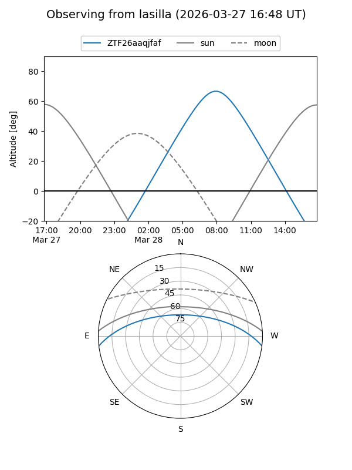
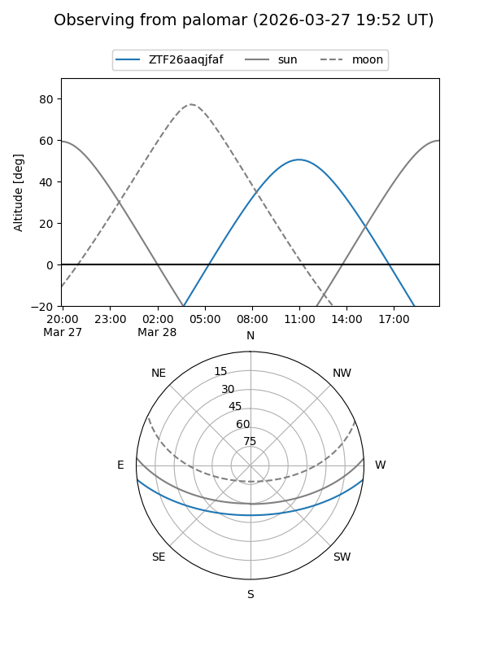

ZTF26aaqjfaf
Target ZTF26aaqjfaf at 2026-03-27 13:40
Aliases and brokers:
FINK: link
Lasair: link
ALeRCE: link
alt names
ZTF26aaqjfaf (ztf,fink_ztf)
Coordinates:
equatorial (ra, dec) = 233.4217,-5.91261
equatorial (HMS+DMS) = 15:33:41.20,-05:54:45.38
galactic (l, b) = (358.9340,+38.72301)
Flags:
Photometry:
last ztfg=17.74
1 ztfg detections
Lightcurve
Visibility


Additional plots